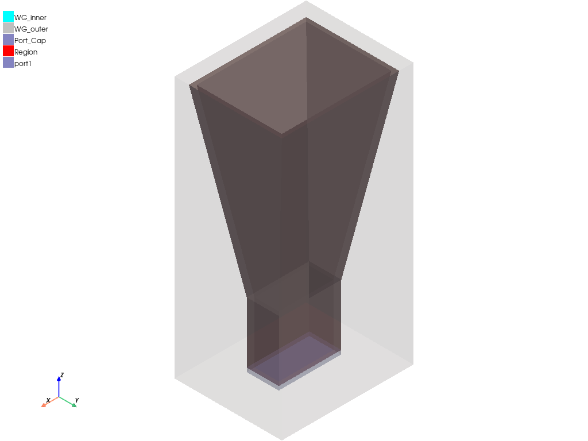
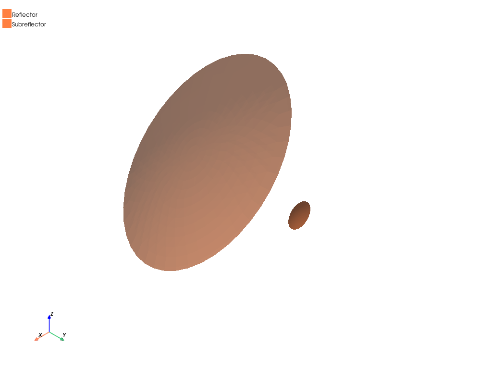

Note
Go to the end to download the full example code.
SBR+: HFSS to SBR+ coupling#
This example shows how you can use PyAEDT to create an HFSS SBR+ project from an HFSS antenna and run a simulation.
Perform required imports#
Perform required imports and set up the local path to the path for the PyAEDT directory.
import os
import ansys.aedt.core
project_full_name = ansys.aedt.core.downloads.download_sbr(ansys.aedt.core.generate_unique_project_name(project_name="sbr_freq"))
Set AEDT version#
Set AEDT version.
aedt_version = "2024.2"
Set non-graphical mode#
Set non-graphical mode.
You can set non_graphical either to True or False.
non_graphical = False
Define designs#
Define two designs, one source and one target, with each design connected to a different object.
target = ansys.aedt.core.Hfss(
project=project_full_name,
design="Cassegrain_",
solution_type="SBR+",
version=aedt_version,
new_desktop=True,
non_graphical=non_graphical
)
source = ansys.aedt.core.Hfss(project=target.project_name,
design="feeder",
version=aedt_version,
)
C:\actions-runner\_work\_tool\Python\3.10.9\x64\lib\subprocess.py:1072: ResourceWarning: subprocess 7820 is still running
_warn("subprocess %s is still running" % self.pid,
C:\actions-runner\_work\pyaedt\pyaedt\.venv\lib\site-packages\ansys\aedt\core\generic\settings.py:231: ResourceWarning: unclosed file <_io.TextIOWrapper name='D:\\Temp\\pyaedt_ansys_260622a4-692f-48cc-bef3-b1a76554a3cc.log' mode='a' encoding='cp1252'>
self.__logger = val
Define linked antenna#
Define a linked antenna. This is HFSS far field applied to HFSS SBR+.
target.create_sbr_linked_antenna(source, target_cs="feederPosition", field_type="farfield")
<ansys.aedt.core.modules.boundary.NativeComponentObject object at 0x000002B31A817B50>
Assign boundaries#
Assign boundaries.
target.assign_perfecte_to_sheets(["Reflector", "Subreflector"])
target.mesh.assign_curvilinear_elements(["Reflector", "Subreflector"])
<ansys.aedt.core.modules.mesh.MeshOperation object at 0x000002B31A814CD0>
Plot model#
Plot the model
source.plot(show=False, output_file=os.path.join(target.working_directory, "Source.jpg"), plot_air_objects=True)
target.plot(show=False, output_file=os.path.join(target.working_directory, "Target.jpg"), plot_air_objects=False)
- 
- 
<ansys.aedt.core.generic.plot.ModelPlotter object at 0x000002B31A814910>
Create setup and solve#
Create a setup and solve it.
setup1 = target.create_setup()
setup1.props["RadiationSetup"] = "ATK_3D"
setup1.props["ComputeFarFields"] = True
setup1.props["RayDensityPerWavelength"] = 2
setup1.props["MaxNumberOfBounces"] = 3
setup1["RangeType"] = "SinglePoints"
setup1["RangeStart"] = "10GHz"
target.analyze()
True
Plot results#
Plot results.
variations = target.available_variations.nominal_w_values_dict
variations["Freq"] = ["10GHz"]
variations["Theta"] = ["All"]
variations["Phi"] = ["All"]
target.post.create_report("db(GainTotal)", target.nominal_adaptive, variations=variations,
primary_sweep_variable="Theta", report_category="Far Fields", context="ATK_3D")
<ansys.aedt.core.modules.report_templates.FarField object at 0x000002B31A8151B0>
Plot results outside AEDT#
Plot results using Matplotlib.
solution = target.post.get_solution_data(
"GainTotal",
target.nominal_adaptive,
variations=variations,
primary_sweep_variable="Theta",
context="ATK_3D",
report_category="Far Fields",
)
solution.plot()
<Figure size 2000x1000 with 1 Axes>
Release AEDT#
Release AEDT and close the example.
target.release_desktop()
True
Total running time of the script: (2 minutes 0.180 seconds)